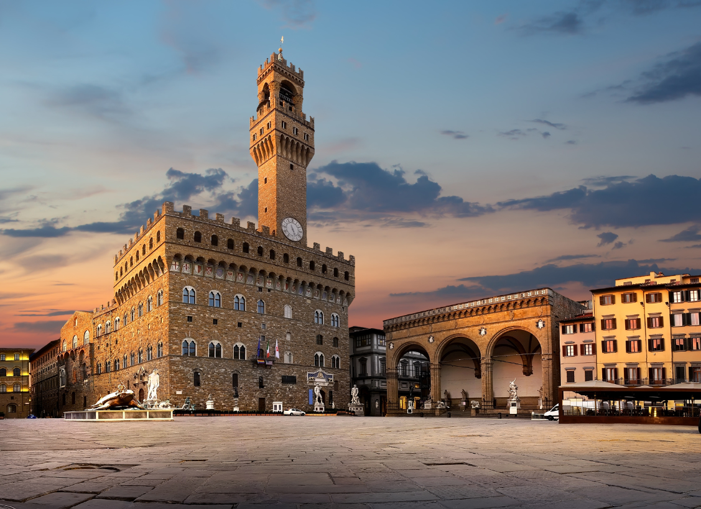

Day by Day

Days 1–2 · Tuesday–Wednesday · Rome
The Eternal City Calls
Rome is not a city — it is a 2,800-year collision of empire, faith and genius. Give yourself two full days and still feel you've only scratched the surface.
07:30
Colosseum & Roman Forum at openingThe first hour is the only hour worth being here — before the crowds arrive and the light is still low and golden. Book timed-entry online weeks ahead.
11:00
Palatine HillRome's founding hill. Stand where emperors lived and survey the Forum below — this is history you can feel underfoot.
13:30
Lunch in TestaccioRome's real food neighbourhood. Supplì at Supplì Roma, then cacio e pepe at Flavio al Velavevodetto — don't compromise on either.
16:00
Vatican Museums & Sistine ChapelBook the first-entry morning slot for Day 2 — but spend Day 1 afternoon seeing St Peter's Basilica (free entry, no queue).
20:30
Trastevere at nightRome's most atmospheric neighbourhood after dark. Cobblestones, ivy-draped walls, outdoor trattorias. Order the house wine — it's always better than it should be.

Day 3 · Thursday · Rome
Piazzas, Fountains & Gelato
The Rome of fountains and baroque drama — Trevi, the Pantheon, Piazza Navona. A day for getting lost and finding something extraordinary around every corner.
08:00
Trevi Fountain before the crowdsAt 8am, you may have it to yourself. Toss your coin. Come back at midnight if you want to see it luminous and empty again.
09:30
The PantheonBuilt in 125 AD. The unreinforced concrete dome remains an engineering miracle. The oculus lets in rain — and it still drains perfectly.
11:30
Piazza Navona espresso stopBernini's Fountain of the Four Rivers in the centre. Have a €4 espresso at a terrace bar and watch Rome do nothing very stylishly.
14:00
Borghese Gallery (pre-booked)Bernini's sculptures — Persephone's flesh dimpling under marble fingers — will ruin all other sculpture for you forever. Strictly 2-hr slots; book months ahead.
18:30
Evening train to Florence — Frecciarossa (1.5 hrs)Italy's fastest train. Book the quiet car, order a Negroni from the bar, and watch Tuscany emerge.

Days 4–5 · Fri–Sat · Florence
Renaissance, Rebirth & Ribollita
Florence is the city where the modern world was invented. Botticelli, Michelangelo, Leonardo — they all walked these streets. Every piazza is a gallery; every gallery is overwhelming.
08:00
Uffizi Gallery — first entry slotThe Birth of Venus, Botticelli's Spring, Leonardo's Annunciation. Go early, take your time on the third floor, ignore the gift shop.
12:00
Climb the Duomo's cupolaBrunelleschi's dome — an engineering feat that had no business being possible in 1436. The view from the top is every postcard you've ever seen, made real.
15:00
Oltrarno neighbourhoodCross the Arno to the artisans' side. Leatherworkers, bookbinders and framers still operate out of medieval workshops. Browse, then climb to Piazzale Michelangelo for sunset.
09:00
Day 5: Accademia — Michelangelo's DavidNo photograph captures the scale. At 5.17m, David feels impossible. Arrive at opening; the crowds build by 10am.
14:00
Chianti wine tasting in the hillsDay-trip south to Greve in Chianti or Panzano. Most estates do walk-in tastings. Pair with pecorino and wild boar salami.

Day 6 · Sunday · Cinque Terre
Five Villages on a Cliffside
Pastel houses stacked above a turquoise Ligurian sea. The five villages — Riomaggiore, Manarola, Corniglia, Vernazza, Monterosso — are connected by trail, ferry and train. Take all three.
07:00
Early train from Florence to La Spezia (2.5 hrs)Change at La Spezia for the local Cinque Terre train. Buy the Cinque Terre Card — covers trail access and unlimited trains between villages.
10:00
Hike Riomaggiore to VernazzaThe trail reopened section offers the most dramatic clifftop views. Allow 2.5 hours and stop at every overlook — you'll regret not doing so.
13:30
Lunch in VernazzaThe prettiest village. Trofie al pesto (Ligurian basil pesto is different — better) at Ristorante Belforte, on the castle tower terrace over the harbour.
15:30
Ferry to Monterosso al MareThe only village with a real beach. Swim, dry off with focaccia and anchovies, then catch the evening train north to Venice.

Days 7–8 · Mon–Tue · Venice
La Serenissima
Venice defies logic. A city of 118 islands, 400 bridges and zero cars — it should have sunk centuries ago, but instead it floats on, impossibly beautiful and magnificently absurd.
07:00
San Marco at dawn — before the crowdsPiazza San Marco is a zoo by 9am. At 7am, the pigeons outnumber the people. The Basilica glows in early light with its Byzantine gold mosaics.
10:00
Doge's Palace & the Bridge of SighsThe seat of Venetian power for 1,000 years. The Secret Itineraries tour takes you through the torture chambers and prison cells — book it.
14:00
Vaporetto to Murano & BuranoMurano for glassblowing workshops, Burano for the improbably coloured fishermen's houses. The lagoon light is extraordinary in the afternoon.
09:00
Day 8: Frari Church & Peggy GuggenheimTitian's Assumption in the Frari is a revelation. Then the Guggenheim collection — Picasso, Dalí and Pollock in a palace on the Grand Canal.
19:00
Gondola at dusk through the back canalsSkip the Grand Canal gondola — negotiate a ride through the narrow rio canals of Dorsoduro. At dusk, the reflections make the water look like hammered bronze.
21:00
Farewell dinner at Osteria alle TestiereOnly 22 seats. The finest seafood restaurant in Venice — lagoon fish cooked with zero fanfare and total mastery. Book months ahead. Worth every effort.